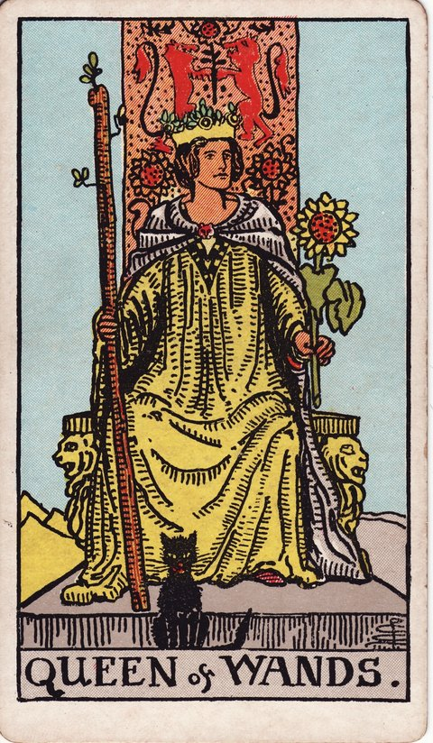

완드 · 타로 카드 백과사전
완드 퀸

정방향
키워드: 따뜻한 카리스마 · 자신감 · 독립적인 리더십 · 은은하게 스미는 안정감 · 홀로 서는 힘 · 나누는 온기
조언: 스스로에 대한 믿음을 갖고 당당하게 주변을 이끌어보세요.
연애운
솔로
자신감 있는 매력으로 좋은 인연을 끌어당기는 시기입니다. 있는 그대로의 모습을 당당히 보여주면 좋은 사람이 다가옵니다.
커플
관계 안에서도 독립적인 모습을 유지하며 매력을 발산하는 시기입니다. 자신만의 영역을 지키는 태도가 오히려 관계를 건강하게 만듭니다.
재물운
소비
독립적이고 자신감 있는 태도로 재정을 잘 관리하는 시기입니다. 자신의 가치관에 맞는 소비를 당당하게 해나가세요.
투자
주도적인 판단으로 재정 결정을 내리기 좋은 시기입니다. 다른 사람의 의견에 휘둘리지 않는 대신, 결정 전에 숫자로 된 근거는 한 번 짚어보고 넘어가세요.
취업운
구직
당당한 태도와 자신감이 좋은 인상을 남기는 시기입니다. 자신의 강점을 자신 있게 드러내 보세요.
이직
따뜻한 카리스마로 주변을 이끄는 리더십을 발휘하는 시기입니다. 팀을 이끌 역할이 주어진다면 자신감을 갖고 맡아보세요.
직장운
팀워크
팀원 개개인을 세심하게 챙기는 태도가 자연스러운 리더십으로 이어지는 시기입니다. 사소한 어려움까지 먼저 물어봐 주는 태도가 팀의 신뢰를 키웁니다.
개인성과
자신감 있는 태도로 업무를 주도하는 시기입니다. 독립적인 판단력을 발휘해 좋은 성과를 낼 수 있어요.
사업운
창업준비
자신감 있는 결단력으로 사업을 이끌어가는 시기입니다. 독립적인 판단력이 사업 성공의 원동력이 됩니다.
운영중
카리스마 있는 리더십으로 조직을 이끄는 시기입니다. 직원들에게 신뢰를 주는 따뜻한 태도를 유지하세요.
학업운
시험준비
자신감을 갖고 주도적으로 학습을 이끌어가는 시기입니다. 자신만의 공부 방식에 확신을 가져도 좋습니다.
진로고민
독립적인 판단으로 진로를 개척해가는 시기입니다. 남들과 다른 길이라도 자신의 선택을 믿어보세요.
건강운
신체
활기차고 자신감 있는 태도로 컨디션을 잘 관리하는 시기입니다. 다른 사람의 시선을 신경 쓰지 않고 자신에게 맞는 운동이나 식단을 당당하게 선택해보세요.
정신
당당하고 독립적인 태도가 심리적 안정을 주는 시기입니다. 혼자만의 시간을 의식적으로 확보하면 그 안정감이 더 오래갑니다.
대인관계운
새로운 인연
당당한 태도만으로도 새로운 사람들이 자연스럽게 다가오는 시기입니다. 먼저 다가가지 않아도 관심을 보이는 사람들에게 마음을 열어보세요.
기존 관계
오래된 친구들 사이에서도 각자의 삶을 존중해주는 성숙한 우정을 나누는 시기입니다. 서로의 공간을 지켜주는 것이 오히려 더 깊은 신뢰로 이어집니다.
명예운
당당한 태도로 존경받는 위치에 서는 시기입니다. 스스로에 대한 믿음이 주변의 신뢰로 이어집니다.
이사운
독립적인 결정으로 원하는 곳으로 이동하는 시기입니다. 자신의 판단을 믿고 과감하게 결정해보세요.
자식운
자신감 있는 태도로 아이를 이끄는 든든한 시기입니다. 당당한 모습이 아이에게도 좋은 본보기가 됩니다.
역방향
키워드: 자기중심적 태도 · 질투 · 과도한 요구 · 늘어나는 바람 · 가슴 한켠을 물들이는 시샘 · 앞세운 내 기준
조언: 요구만 앞세우기보다 주변을 배려하는 마음을 다시 떠올려보세요.
연애운
솔로
지나친 요구나 질투가 관계를 불편하게 만들 수 있습니다. 상대를 통제하려는 마음을 내려놓고 있는 그대로 받아들여보세요.
커플
자기중심적인 태도가 상대를 지치게 할 수 있습니다. 관계에서 나만 옳다는 생각을 잠시 내려놓아보세요.
재물운
소비
과시성 소비가 재정에 부담을 줄 수 있습니다. 남에게 보여주기 위한 지출인지 스스로 점검해보세요.
투자
고집스러운 판단이 재정적 손실로 이어질 수 있습니다. 다른 의견에도 귀 기울이는 여유를 가져보세요.
취업운
구직
요구가 많아지거나 자기중심적인 태도가 문제가 될 수 있습니다. 협업 과정에서 상대의 입장도 함께 고려하세요.
이직
지나친 자기주장이 팀 내 갈등을 만들 수 있습니다. 리더십을 발휘하되 다른 목소리도 들어보세요.
직장운
팀워크
팀 내에서 자기 뜻만 앞세우다 보니 요구가 지나치게 많아 보일 수 있습니다. 팀원들의 의견을 더 존중하는 태도가 필요합니다.
개인성과
고집스러운 태도가 협업에 어려움을 줄 수 있습니다. 자신의 방식만 고수하기보다 유연하게 대처해보세요.
사업운
창업준비
규모를 크게 보이려는 욕심에 분수에 맞지 않는 사무실이나 설비에 투자하고 있을 수 있습니다. 겉모습보다 실제 매출과 현금흐름을 우선 점검해보세요.
운영중
자기중심적인 경영 방식이 직원들의 불만으로 이어질 수 있습니다. 독단적인 결정보다 의견을 듣는 태도가 필요합니다.
학업운
시험준비
고집스러운 태도가 학습에 방해가 될 수 있습니다. 자신의 방식만 고집하기보다 다른 방법도 시도해보세요.
진로고민
자기 확신이 지나쳐 조언을 무시하고 있을 수 있습니다. 주변의 현실적인 조언에도 귀를 기울여보세요.
건강운
신체
감정 기복이 컨디션에 영향을 줄 수 있습니다. 예민해진 감정을 다스리는 나만의 방법을 찾아보세요.
정신
질투나 예민함이 마음을 지치게 할 수 있습니다. 남과 비교하기보다 자신의 페이스를 지키는 것이 중요합니다.
대인관계운
새로운 인연
새로 알게 된 사람에게 지나치게 많은 것을 바라다 관계가 불편해질 수 있습니다. 처음부터 너무 많은 것을 기대하지 않도록 주의하세요.
기존 관계
친구나 지인에게 지나치게 많은 것을 요구하다 관계가 부담스러워질 수 있습니다. 상대에게도 각자의 사정이 있다는 것을 헤아려보세요.
명예운
자기중심적인 태도가 평판에 영향을 줄 수 있습니다. 주변을 배려하지 않는 모습이 반감을 살 수 있으니 주의하세요.
이사운
고집스러운 태도가 이동 계획에 걸림돌이 될 수 있습니다. 가족이나 동거인의 의견도 함께 고려해보세요.
자식운
요구가 많아지며 아이와 부딪힐 수 있습니다. 아이에게 지나친 기대를 강요하고 있지 않은지 돌아보세요.
같은 슈트: 완드 에이스 · 완드 2 · 완드 3 · 완드 4 · 완드 5 · 완드 6 · 완드 7 · 완드 8 · 완드 9 · 완드 10 · 완드 시종 · 완드 기사 · 완드 퀸 · 완드 킹
홈에서 직접 카드 뽑아보기 ↗